8. Unconditional DPmixGPD with CRP Backend
Source:vignettes/legacy/v08-unconditional-DPmixGPD-CRP.Rmd
v08-unconditional-DPmixGPD-CRP.RmdLegacy vignette (for the website / historical notes). These files may not match the current exported API one-to-one. Last verified: 2026-01-18.
For the up-to-date workflow, see the main package vignettes (Introduction, Model Spec, MCMC Workflow, Unconditional/Conditional/Causal, Backends, S3 Reference).
Theory (brief)
The bulk density is modeled with a DP mixture, while a GPD tail is spliced above a threshold to stabilize tail inference. The CRP backend governs cluster allocations in the bulk.
Unconditional DPmixGPD: CRP Backend with Tail Augmentation
Purpose: Model the bulk of the
distribution with a DP mixture (the “kernel” or bulk family) and let a
GPD tail capture extreme values beyond a threshold. The
CRP backend handles partitioning and we toggle GPD = TRUE
to augment the tail.
Data Setup
# Load data with an obvious tail
data("nc_pos_tail200_k4")
y_tail <- nc_pos_tail200_k4$y
y_tail <- y_tail[is.finite(y_tail) & y_tail > 0]
# Summaries and table
summary_tbl <- tibble(
statistic = c("N", "Mean", "SD", "Min", "Max"),
value = c(length(y_tail), mean(y_tail), sd(y_tail), min(y_tail), max(y_tail))
)
df_data <- data.frame(y = y_tail)
ggplot(df_data, aes(x = y)) +
geom_histogram(aes(y = after_stat(density)), bins = 40, fill = "steelblue", color = "black", alpha = 0.6) +
geom_density(color = "red", linewidth = 1) +
labs(title = "Raw Data: Mix of Bulk and Tail", x = "y", y = "Density") +
theme_minimal()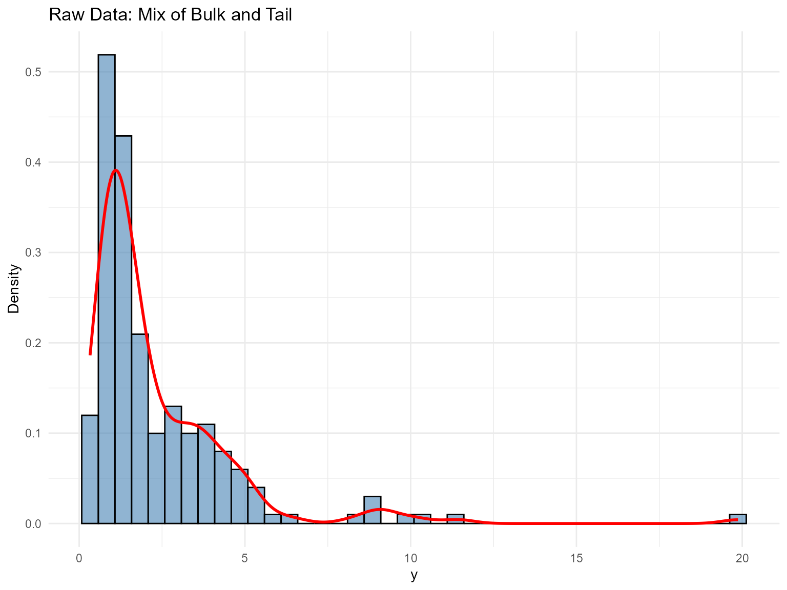
| statistic | value |
|---|---|
| N | 200.000 |
| Mean | 2.334 |
| SD | 2.300 |
| Min | 0.328 |
| Max | 19.870 |
Threshold & Tail Partition
thresholds <- quantile(y_tail, c(0.70, 0.75, 0.80, 0.85, 0.90))
u_threshold <- thresholds["80%"]
df_tail <- tibble(
y = y_tail,
region = ifelse(y_tail > u_threshold, "Tail", "Bulk")
)
ggplot(df_tail, aes(x = y, fill = region)) +
geom_histogram(aes(y = after_stat(density)), bins = 40, alpha = 0.7, color = "black") +
geom_vline(xintercept = u_threshold, linetype = "dashed", color = "black") +
scale_fill_manual(values = c("Bulk" = "steelblue", "Tail" = "red")) +
labs(title = "Threshold Partition", x = "y", y = "Density") +
theme_minimal()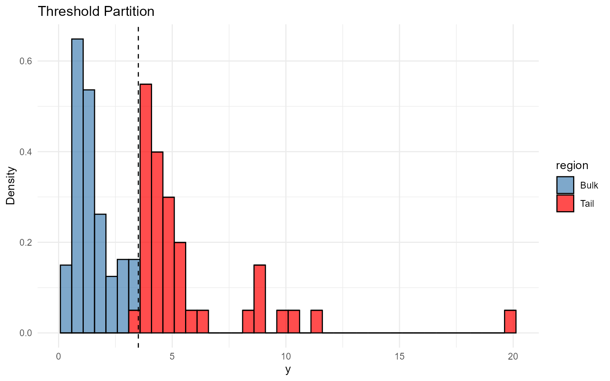
Model Specification & Bundle
This mirrors the direct build_nimble_bundle() workflow
in v04, but with tail augmentation turned
on (GPD = TRUE). Here we use an Inverse
Gaussian bulk kernel and estimate the GPD threshold with a
lognormal prior centered at the empirical 80th percentile.
bundle_gpd <- build_nimble_bundle(
y = y_tail,
kernel = "invgauss",
backend = "crp",
GPD = TRUE,
components = 5,
alpha_random = TRUE,
param_specs = list(
gpd = list(
threshold = list(
mode = "dist",
dist = "lognormal",
args = list(meanlog = log(max(u_threshold, .Machine$double.eps)), sdlog = 0.25)
)
)
),
mcmc = mcmc
)Running MCMC & Diagnostics
fit_gpd <- load_or_fit("v08-unconditional-DPmixGPD-CRP-fit_gpd", run_mcmc_bundle_manual(bundle_gpd))
summary(fit_gpd)MixGPD summary | backend: Chinese Restaurant Process | kernel: Inverse Gaussian Distribution | GPD tail: TRUE | epsilon: 0.025
n = 200 | components = 5
Summary
Initial components: 5 | Components after truncation: 2
WAIC: 656.824
lppd: -283.017 | pWAIC: 45.395
Summary table
parameter mean sd q0.025 q0.500 q0.975 ess
weights[1] 0.548 0.068 0.445 0.54 0.693 32.721
weights[2] 0.376 0.078 0.224 0.39 0.491 20.487
alpha 0.547 0.334 0.105 0.461 1.333 150
tail_scale 2.091 0.788 1.284 1.845 4.208 22.592
tail_shape 0.151 0.13 -0.038 0.153 0.495 28.026
threshold 3.361 0.878 2.161 3.145 5.485 14.433
mean[1] 3.038 1.64 1.211 2.881 6.659 15.294
mean[2] 2.846 2.192 1.211 1.565 8.351 22.6
shape[1] 3.572 0.98 2.003 3.528 5.537 42.923
shape[2] 4.458 1.23 2.229 4.302 6.853 37.979
params_gpd <- params(fit_gpd)
params_gpdPosterior mean parameters
$alpha
[1] "0.547"
$w
[1] "0.548" "0.376"
$mean
[1] "3.038" "2.846"
$shape
[1] "3.572" "4.458"
$tail_scale
[1] "2.091"
$tail_shape
[1] "0.151"
plot(fit_gpd, family = "traceplot")
=== traceplot ===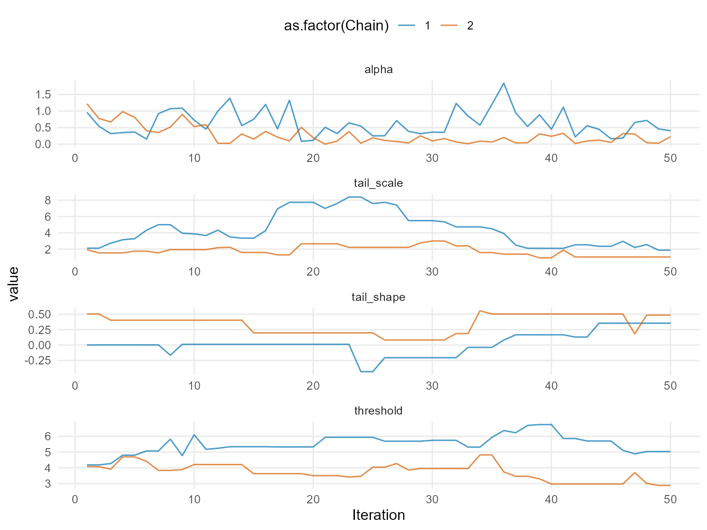
plot(fit_gpd, params = "mean", family = "traceplot")
=== traceplot ===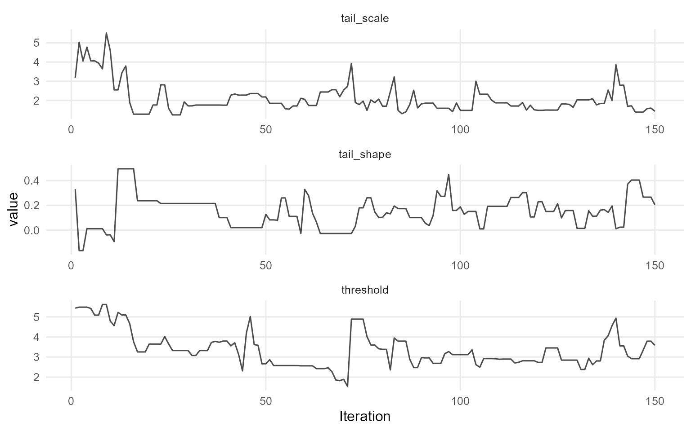
plot(fit_gpd, params = "shape", family = "caterpillar")
=== caterpillar ===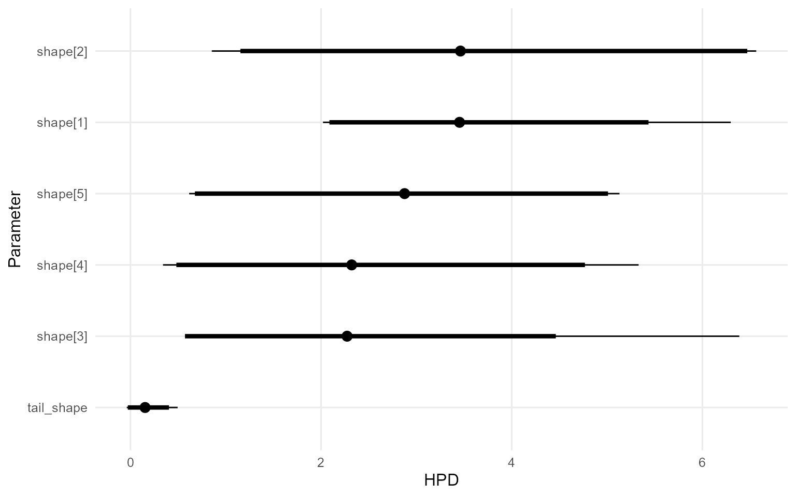
Posterior Predictions: Bulk and Tail
We use the S3 predict() objects and
their dedicated plot() methods to visualize densities,
survival curves, and posterior-mean quantiles (i.e., averages of q(p |
θ) over draws).
y_min <- max(min(y_tail), .Machine$double.eps)
y_grid <- seq(y_min, max(y_tail) * 1.3, length.out = 300)
pred_density <- predict(fit_gpd, y = y_grid, type = "density")
plot(pred_density)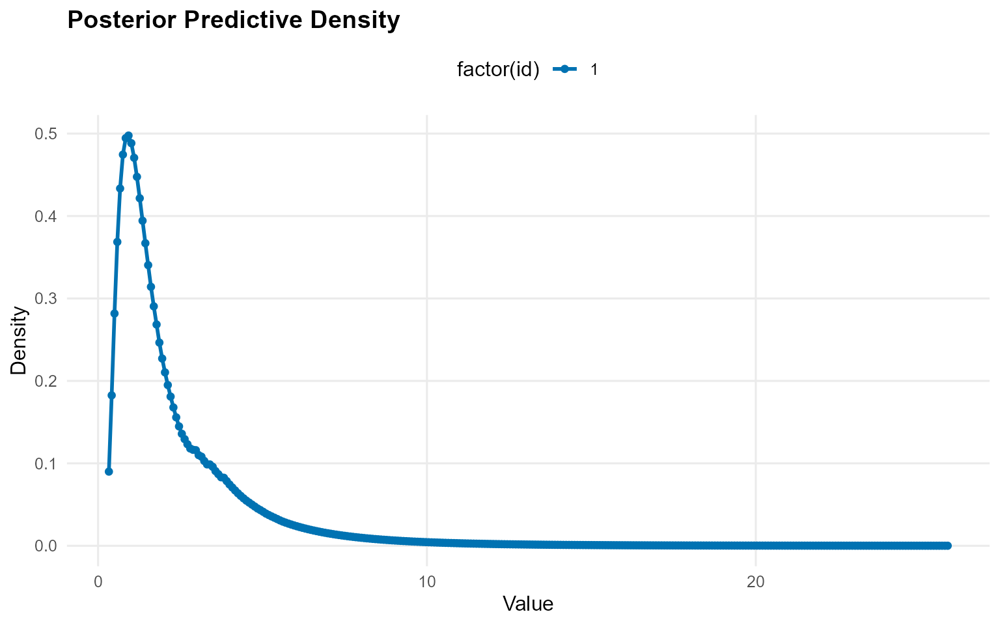
y_surv <- seq(max(u_threshold, y_min), max(y_tail) * 1.1, length.out = 60)
pred_surv <- predict(fit_gpd, y = y_surv, type = "survival")
plot(pred_surv)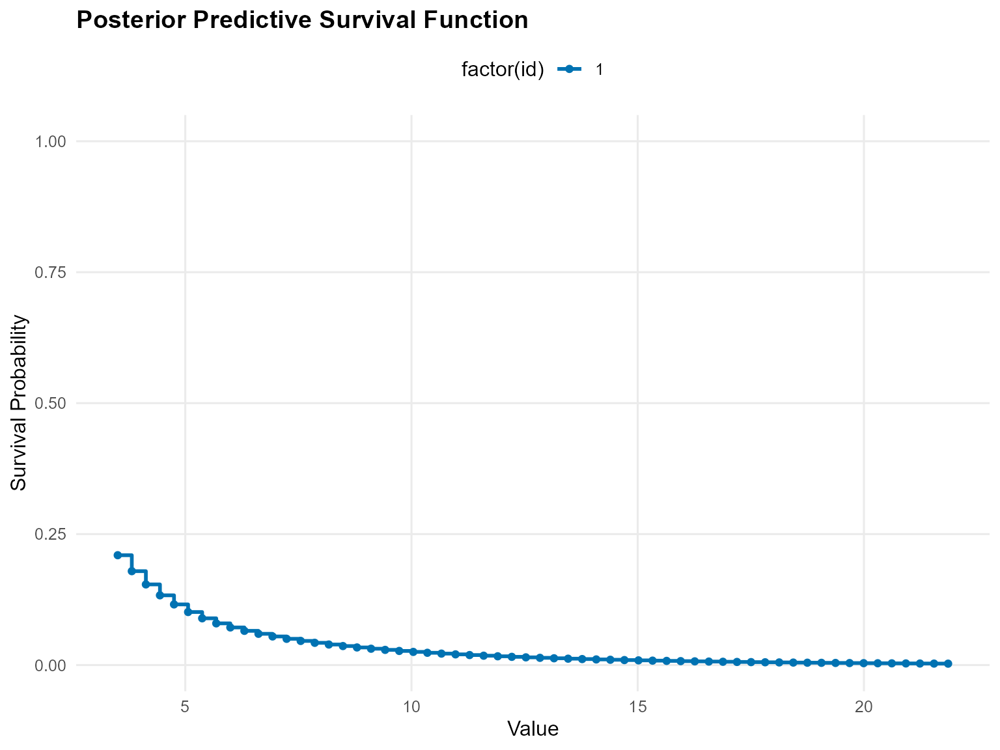
quantile_probs <- c(0.90, 0.95, 0.99)
pred_quantiles <- predict(fit_gpd, type = "quantile", index = quantile_probs, interval = "credible")
plot(pred_quantiles)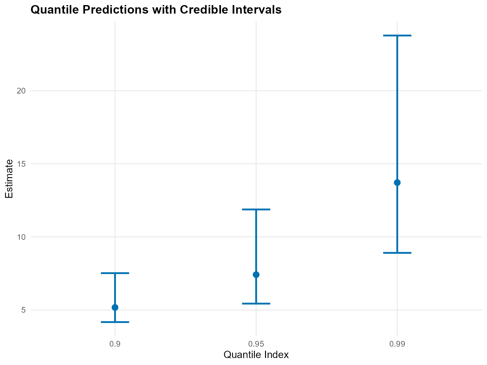
Bulk-Only Baseline Comparison
To demonstrate the value of tail augmentation, we fit a bulk-only lognormal DP mixture and compare posterior summaries against the InvGauss+GPD fit.
bundle_bulk_only <- build_nimble_bundle(
y = y_tail,
kernel = "lognormal",
backend = "crp",
GPD = FALSE,
components = 5,
mcmc = mcmc
)
fit_bulk_only <- load_or_fit("v08-unconditional-DPmixGPD-CRP-fit_bulk_only", run_mcmc_bundle_manual(bundle_bulk_only))
bulk_quantiles <- predict(fit_bulk_only, type = "quantile", index = quantile_probs)
tail_quantiles <- predict(fit_gpd, type = "quantile", index = quantile_probs)
compare_tbl <- bind_rows(
bulk_quantiles$fit %>% mutate(model = "Bulk only"),
tail_quantiles$fit %>% mutate(model = "Bulk + GPD")
) %>%
select(any_of(c("model", "index", "estimate", "lwr", "upr", "lower", "upper")))
compare_tbl %>%
mutate(across(where(is.numeric), ~ round(.x, 3))) %>%
kable(caption = "Posterior-Mean Quantiles for Bulk-Only vs GPD Models", align = "c") %>%
kable_styling(bootstrap_options = c("striped", "hover"), full_width = FALSE, position = "center")| model | index | estimate | lower | upper |
|---|---|---|---|---|
| Bulk only | 0.90 | 161.45 | 11.88 | 1.49e+03 |
| Bulk only | 0.95 | 1217.89 | 20.45 | 1.19e+04 |
| Bulk only | 0.99 | 71808.37 | 57.05 | 6.30e+05 |
| Bulk + GPD | 0.90 | 4.79 | 3.61 | 5.72e+00 |
| Bulk + GPD | 0.95 | 6.41 | 4.79 | 8.00e+00 |
| Bulk + GPD | 0.99 | 11.10 | 8.35 | 1.55e+01 |
plot(bulk_quantiles)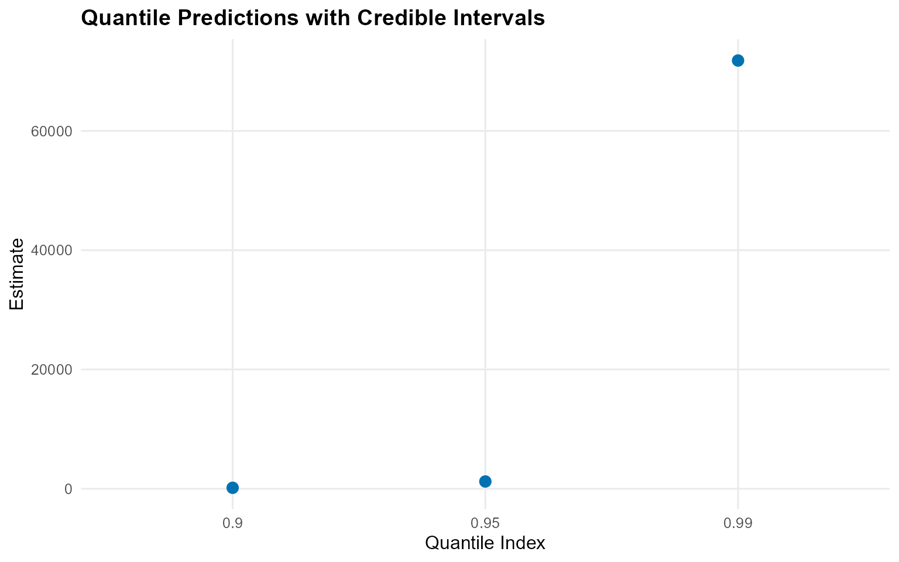
plot(tail_quantiles)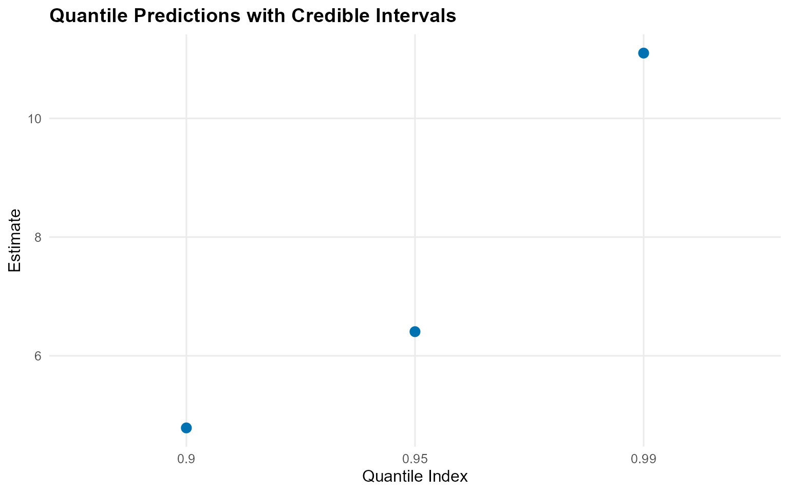
Extreme Value Diagnostics & Residuals
probs <- c(0.995, 0.99, 0.975)
return_levels <- predict(fit_gpd, type = "quantile", index = probs)
return_levels$fit %>%
mutate(across(where(is.numeric), ~ round(.x, 3))) %>%
kable(caption = "Extreme Quantile Estimates (Posterior Mean and Credible Intervals)", align = "c") %>%
kable_styling(bootstrap_options = c("striped", "hover"), full_width = FALSE, position = "center")| estimate | index | lower | upper |
|---|---|---|---|
| 13.58 | 0.995 | 10.09 | 20.4 |
| 11.10 | 0.990 | 8.35 | 15.5 |
| 8.27 | 0.975 | 6.36 | 11.1 |
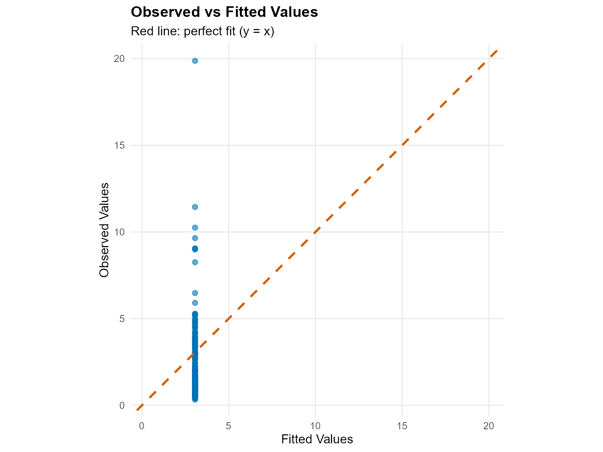
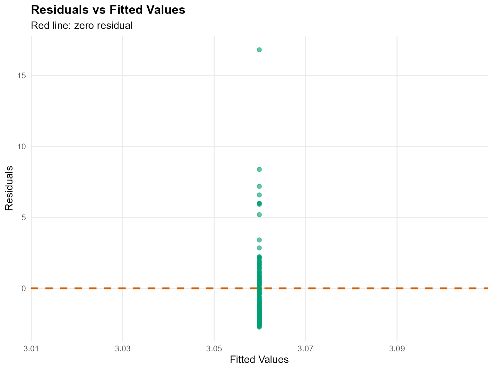
Threshold Sensitivity
sensitivity_fits <- lapply(thresholds, function(u) {
bundle <- build_nimble_bundle(
y = y_tail,
kernel = "invgauss",
backend = "crp",
GPD = TRUE,
param_specs = list(
gpd = list(
threshold = list(mode = "fixed", value = u)
)
),
components = 5,
mcmc = mcmc
)
fit <- load_or_fit("v08-unconditional-DPmixGPD-CRP-fit", run_mcmc_bundle_manual(bundle))
list(threshold = u, fit = fit)
})
sensitivity_tbl <- bind_rows(lapply(sensitivity_fits, function(entry) {
quant <- predict(entry$fit, type = "quantile", index = 0.99, interval = "credible")
qfit <- as.data.frame(quant$fit)
qfit$threshold <- entry$threshold
# Keep the usual columns if present
keep <- intersect(names(qfit), c("threshold", "index", "estimate", "lower", "upper", "lwr", "upr"))
qfit <- qfit[, keep, drop = FALSE]
# Standardize to one set of CI column names
if (!"lower" %in% names(qfit) && "lwr" %in% names(qfit)) qfit$lower <- qfit$lwr
if (!"upper" %in% names(qfit) && "upr" %in% names(qfit)) qfit$upper <- qfit$upr
# If estimate isn't present for some reason, fall back to the first numeric column
if (!"estimate" %in% names(qfit)) {
num_cols <- names(qfit)[vapply(qfit, is.numeric, logical(1))]
if (length(num_cols) > 0) qfit$estimate <- qfit[[num_cols[1]]]
}
out <- data.frame(
threshold = qfit$threshold[1],
q_99 = qfit$estimate[1],
q_99_lwr = if ("lower" %in% names(qfit)) qfit$lower[1] else NA_real_,
q_99_upr = if ("upper" %in% names(qfit)) qfit$upper[1] else NA_real_
)
tibble::as_tibble(out)
}))
sensitivity_tbl %>%
mutate(across(where(is.numeric), ~ round(.x, 3))) %>%
kable(caption = "Threshold Sensitivity: 99th Quantile", align = "c") %>%
kable_styling(bootstrap_options = c("striped", "hover"), full_width = FALSE, position = "center")| threshold | q_99 | q_99_lwr | q_99_upr |
|---|---|---|---|
| 2.65 | 11.3 | 4.74 | 17.4 |
| 3.04 | 11.3 | 4.74 | 17.4 |
| 3.51 | 11.3 | 4.74 | 17.4 |
| 3.94 | 11.3 | 4.74 | 17.4 |
| 4.60 | 11.3 | 4.74 | 17.4 |
Key Takeaways
- Bulk + Tail: DPmix explains the bulk, and GPD captures the extremes.
- Threshold: 0.8 quantile is our running default, but sensitivity checks guide the choice.
-
S3 workflows:
predict()and itsplot()method make it easy to compare density, survival, and quantiles. - Comparison: Bulk-only fits under-estimate extreme quantiles without a GPD component.
-
Next: Explore Stick-Breaking (
v07) for another backend with tail augmentation.